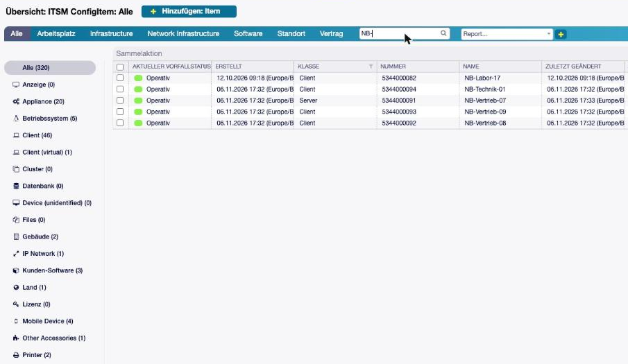
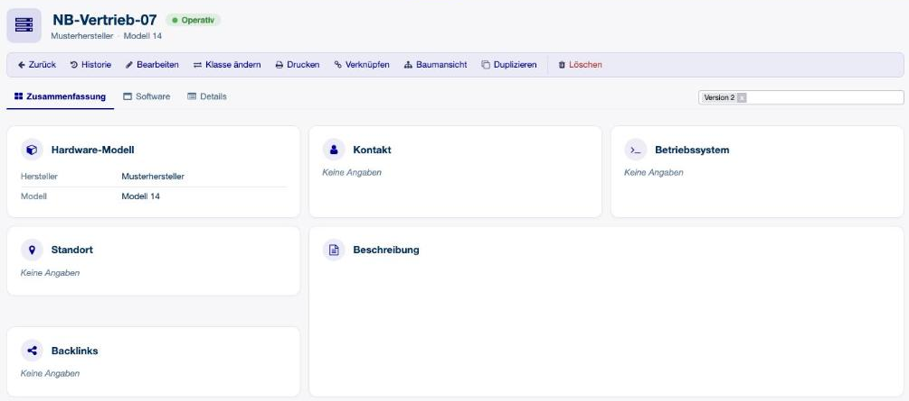

Die CMDB im Alltag¶
Bezeichnungen¶
Masken, Hilfetexte und Hinweise in Prozessen nennen den Verwendungsstatus nach der Installation einheitlich Lifecycle Status, im Englischen Lifecycle State.
Config-Item-Übersicht¶


Abb. 1 Links der Klassenbaum mit Anzahl je Klasse, oben das Suchfeld. Die Liste ist hier auf „NB-“ gefiltert.¶
- Suche und Klassenbaum
Über der Liste steht ein Suchfeld, daneben die Klassen nach Kategorie mit ihrer Anzahl. Eine Eingabe durchsucht zugleich den Namen des Config Items, die Kundenfirma und den Ansprechpartner. Sie müssen also nicht wissen, wozu der Begriff gehört. Spaltenfilter und Sortierung arbeiten bei aktivem Filter weiter. Kunde und Ansprechpartner werden über die Felder
Contact-ReferenceToCompanyundContact-Usergesucht. Gibt es diese nicht, wird nur der Name durchsucht.- Ein Link je Wert
Hat ein Referenzfeld in einer Spalte mehrere Werte, etwa die Server eines Clusters, steht jedes Config Item in einer eigenen Zeile mit eigenem Link. Solche Spalten gibt es, wo die Administration das Feld in
ITSMConfigItem::Frontend::AgentITSMConfigItem###ClassColumnsAvailableoder…###ClassColumnsDefaultfür die Klasse einträgt, alsDynamicField_<Feldname>.- Hinzufügen
Der Knopf in der Überschrift führt bei gewählter Klasse direkt in deren Bearbeitungsmaske, in der ungefilterten Liste in die normale Klassenauswahl.
- Verstellbare Spalten
Spalten lassen sich mit der Maus in der Breite ziehen. Die Breite gilt je Filter, also je Klasse, und bleibt in Ihren Benutzereinstellungen gespeichert.
- Längere Feldwerte
Dynamische Felder dürfen in der Liste länger sein, bevor sie abgeschnitten werden.
Config-Item-Ansicht¶


Abb. 2 Kopf mit Symbol, Name, Vorfallstatus und Kopffeldern, darunter das Menü und die Seiten als Reiter.¶
- Kopf
Das Symbol der Klasse, der Name, der Vorfallstatus als Kennzeichen und darunter bis zu fünf Kopffelder (Vorgabe: Hersteller und Modell). Eine Klasse ohne diese Felder zeigt Klasse, Nummer und Lifecycle Status.
- Kacheln
Unter dem Menü stehen auf Wunsch Vorfallstatus, Klasse, Standort und letzte Änderung (Einstellung
ZoomTiles).- Menü, Reiter und Abschnitte
Das Menü ist eine Werkzeugleiste mit einem Symbol je Aktion, die Seiten sind Reiter, und jeder Abschnitt hat ein Symbol vor dem Titel. Alle Symbole kommen aus der Systemkonfiguration und erscheinen in der Hauptfarbe des Designs.
- Leere Seiten sind ausgeblendet
Eine Seite, deren Felder alle leer sind, bekommt keinen Reiter. Zusammenfassung und Details sind immer sichtbar.
- Bearbeiten öffnet die aktuelle Seite
Die Bearbeitungsmaske klappt den Abschnitt der Seite auf, auf der Sie gerade waren, und scrollt dorthin.
- Port-Verbindungen
Ein Config Item, auf das Config Items der Klasse Port über
ITSMPortConfiguration-Deviceverweisen, zeigt eine Port-Übersicht: lokale Ports, die sichtbaren Ziele und je Port, ob er verbunden, unvollständig, frei oder ungenutzt ist.
Config Items und Tickets verknüpfen¶
- CI Connector
Config Items werden beim Schreiben des Tickets ausgewählt, nicht erst danach verknüpft. Ein Widget im Telefon-Ticket durchsucht die CMDB, zeigt eine Vorschau und sammelt die Auswahl. Beim Absenden werden die Config Items als
RelevantTomit dem neuen Ticket verknüpft. In der Ticket-Ansicht steht dasselbe Widget in der Seitenleiste und zeigt die verknüpften Config Items mit ihren Daten.- Schnellmenü
In der Ticket-Ansicht listet ein Auswahlmenü alle gültigen Klassen. Die Auswahl öffnet den Verknüpfungsdialog mit dieser Klasse.
*als Vorgabe im VerknüpfungsdialogIst eine Klasse gewählt und kein Suchbegriff eingegeben, sucht der Dialog nach
*. Er zeigt also alle Config Items der Klasse statt keines.
Feldtyp ConfigItem Class¶
Eine Auswahl der Config-Item-Klassen des Systems. Die Administration kann sie auf bestimmte Klassen
beschränken, außerdem sieht jede Person nur Klassen, auf die sie Leserecht (ro) hat. Gespeichert wird die
Klassen-ID, angezeigt der Name. So kann ein Prozess oder eine Maske nach Klasse verzweigen, ohne eine von Hand
gepflegte Werteliste.
Baumansicht für Referenzfelder¶
Ein vorhandenes Referenzfeld kann seine Auswahl als Baum der verwiesenen Config Items zeigen statt als flache Liste. Es bleibt ein normales ConfigItem-Feld und speichert normale IDs. Abschnitte, Linsen und Verknüpfungen verhalten sich also wie bisher.
Einschalten je Feld: Attribut Tree view = Yes in der Verwaltung des Feldes. Funktioniert in den Modi Dropdown und Mehrfachauswahl, die Autovervollständigung bleibt, wie sie ist.
Die Hierarchie legen die Tree parent reference fields fest. Bleibt das bei einem Standortfeld leer, folgt die Ansicht den befüllten Feldern
Location-ReferenceTo*. Bei mehreren befüllten Elternfeldern gewinnt das erste in Namensreihenfolge, bei mehreren Werten der erste Wert.Sichtbar ist nur, was auswählbar ist. Eltern, die Rechte, Klasseneinschränkungen oder Referenzfilter verbergen, entfallen. Kreise werden aufgelöst.
Kürzere Zweige bekommen gesperrte Platzhalter wie „Kein Land definiert“, damit eine Klasse immer auf derselben Tiefe steht.
Bei der Installation ist nichts aktiv. Schalten Sie es von Hand ein, zum Beispiel für
Location-ReferenceToLocation.